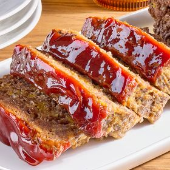

Copycat Cracker Barrel Meatloaf

Decription
This copycat Cracker Barrel meatloaf is juicy and tender, with a zippy sauce baked on top just like the restaurant favorite. Ritz crackers and sharp Cheddar cheese are baked in to give it the rich, comforting flavor of the original
Ingredients
- 1 tablespoon olive oil
- 1/2 cup finely chopped onion
- 1/2 cup finely chopped yellow bell pepper
- 2 large eggs
- 1/2 cup whole milk
- 3/4 teaspoon salt
- 1/2 teaspoon ground black pepper
- 1 cup shredded sharp Cheddar cheese
- 1 cup crushed buttery round crackers, such as Ritz®
- 2 pounds 80% lean ground beef
- 3/4 cup ketchup
- 2 tablespoons brown sugar
- 2 teaspoons yellow mustard
- 1 teaspoon Worcestershire sauce
Steps
- Step 1 - Preheat the oven to 350 degrees F (175 degrees C). Line a 9x5-inch loaf pan with parchment paper, leaving overhang on 2 long sides.
- Step 2 - Heat oil in a small skillet over medium heat. Add onion and bell pepper. Cook and stir until tender, about 5 minutes.
- Step 3 - Beat eggs in a large bowl. Whisk in milk, salt and pepper. Stir in cooked onion and bell pepper, cheese, and cracker crumbs. Add ground beef and stir just until combined. Pat into the prepared loaf pan. Place the loaf pan on a rimmed baking sheet.
- Step 4 - Bake in the preheated oven for 30 minutes
- Step 5 - Meanwhile, stir together ketchup, brown sugar, mustard, and Worcestershire in a small bowl.
- Step 6 - Remove meatloaf from the oven and spoon ketchup mixture over meatloaf.
- Step 7 - Return to the oven and bake until an instant-read thermometer inserted in the center registers 160 degrees F (71 degrees C), 40 to 50 minutes.
- Step 8 - Let cool on a wire rack 15 minutes before serving. Use parchment to lift meatloaf from the pan to transfer to a cutting board to serve